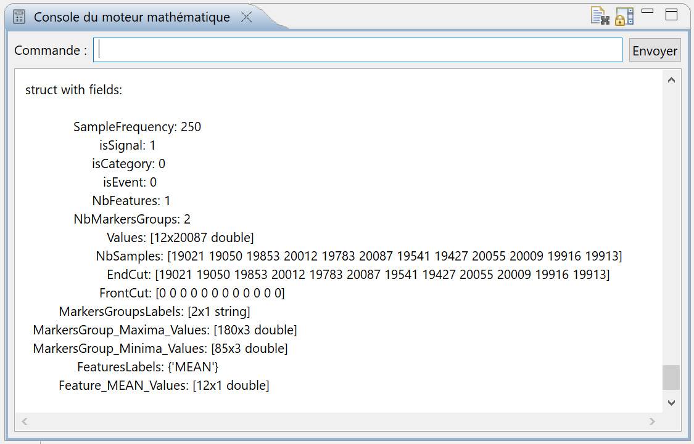
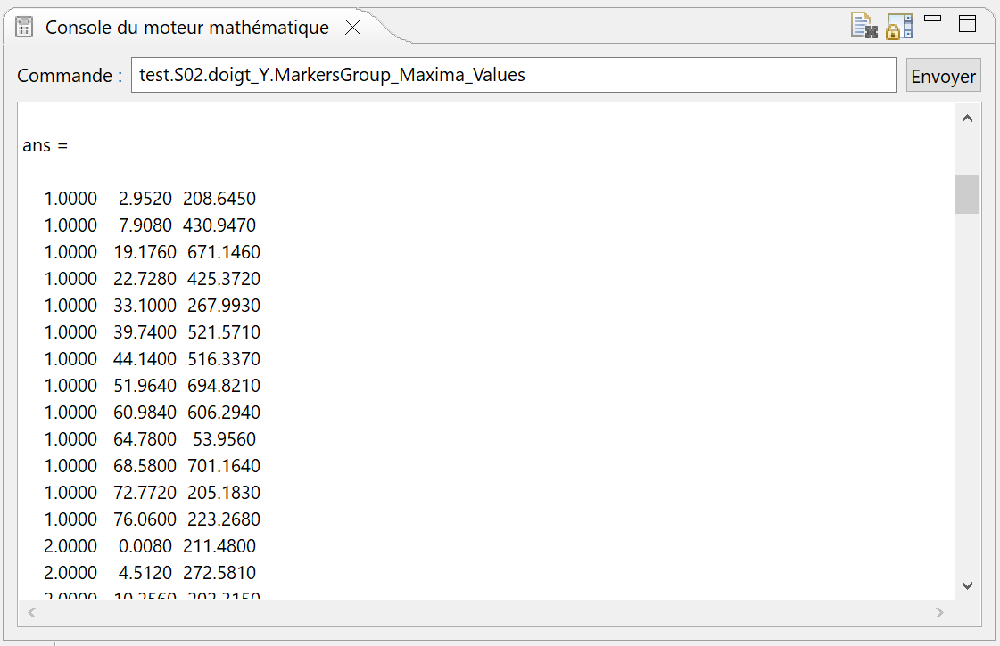
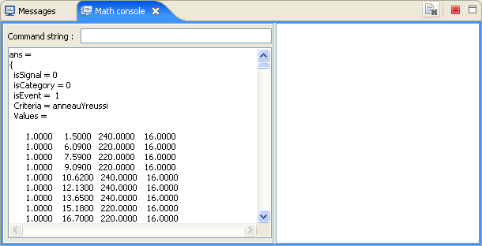
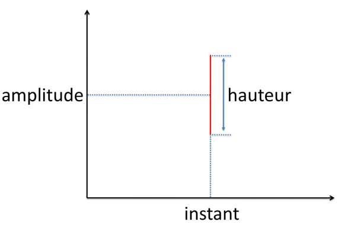
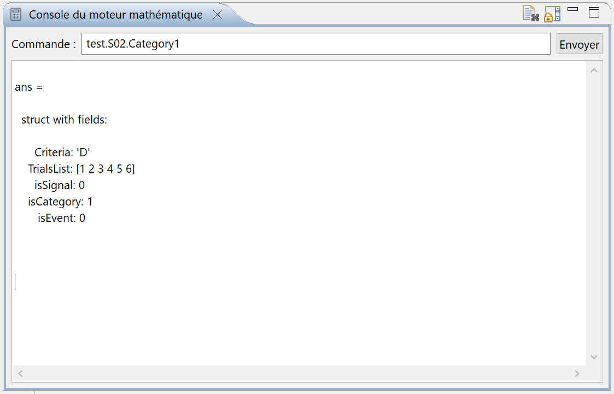

When a subject is loaded, its data are organized in the math engine in three classes of elements:
Each element is identified by a full name made of the experiment, the
subject and the element, separated by dots:
Experiment.Subject.Element. The names of signals, events
and categories must follow the naming conventions of Matlab variables
(a letter, then letters, digits or "_"). Each element is itself made of
sub-elements (sample frequency, values...) described below:
docometre.experiments dictionary, whose keys are the full
names of the sub-elements, for example
docometre.experiments["MyExp.S01.Force.Values"]
(D is a shortcut for docometre.experiments);MyExp.S01.Force.Values.Knowing this model is useful to write expressions, user functions or scripts, and to inspect data in the math engine console. The images of this page show elements displayed in the console with Matlab.

| Element | Description |
|---|---|
isSignal, isCategory, isEvent |
Booleans (0 or 1) that tell to which class the element belongs.
Only one of them is 1: for a signal, isSignal is 1 and
the others are 0. |
SampleFrequency |
Sample frequency of the signal, in Hz. It is used to compute the time of each sample: with 200Hz, the sample period is 5ms. |
Values |
Matrix of all the samples. Each line is a trial; for a given line,
the cell of column c is the sample acquired at time
c × Te, Te being the sample
period. As trials do not all have the same duration, the shorter
trials are completed with zeros (or with their last value, see the
Math Engine preferences). Keep this in mind in your processing:
use NbSamples, FrontCut and
EndCut to process only the relevant samples. |
NbSamples |
Vector of the number of samples of each trial (one cell per
trial, that is per line of Values). |
FrontCut, EndCut |
Vectors with one cell per trial. FrontCut is the
index of the first sample to display in a chart, EndCut
the index after which samples are not displayed. When a subject is
loaded, they are 0 and the number of samples of the trial. They can
be changed by functions (Modify Front Cut, Modify End Cut...) to
remove the beginning or the end of the trials from charts; you can
also decide not to process the samples outside these cuts in your
scripts. |
NbMarkersGroups, MarkersGroupsLabels,
MarkersGroup_Label_Values |
Markers of the signal. A marker is a point of a trial (its maximum,
for example) and a markers group is a set of markers of the
same kind, identified by a label ("Maxima" for example).
NbMarkersGroups is the number of groups,
MarkersGroupsLabels the list of their labels, and
MarkersGroup_Label_Values, for the group of label
Label, a matrix of three columns: trial number, time (seconds) and
amplitude of the marker. A trial can have several markers of the
same group, at different times (see Image 2). |
NbFeatures, FeaturesLabels,
Feature_Label_Values |
Features of the signal. A feature is a single value per trial, for
example the mean of the signal in each trial.
NbFeatures is the number of features,
FeaturesLabels the list of their labels, and
Feature_Label_Values, for the feature of label Label,
a vector whose cell n is the value of the feature for trial n. |
isFrequencyDomain |
Present and equal to 1 for signals in the frequency domain (result of the FFT function): the abscissa is then a frequency. |

An event has the elements isEvent (equal to 1),
isSignal and isCategory, and:
Criteria: a string that defines the event;Values: a matrix of four columns. For a given line, the
first column is the trial number, the second the time of the event in
seconds, the third the amplitude and the last the height of the
event. The height can be infinite, in which case the amplitude is not
significant (NaN by default). See Images 3 and 4.Events are not created by the functions of the standard library; they come with some imported data files.


Categories are named Category1, Category2,
etc. A category has the elements isCategory (equal to 1),
isSignal and isEvent, and:
Criteria: a string that defines the category. For data
acquired with DOCoMETRe, it is SessionName.ProcessName,
preceded by the data files prefix of the session if any (see
Trials numbering and
categories). For Optitrack type 1 files, it is the second part
of the file name (D for S02_D_1.csv), and
for Optitrack type 2 files Session1;TrialsList: the list of the trials that belong to the
category.

The following Python code computes the mean of the samples of trial 3 of the signal Force of subject S01, between its cuts (trials and samples are numbered from 0 in Python):
values = docometre.experiments["MyExp.S01.Force.Values"] start = int(docometre.experiments["MyExp.S01.Force.FrontCut"][2]) end = int(docometre.experiments["MyExp.S01.Force.EndCut"][2]) mean = numpy.mean(values[2, start:end])
And the same with Matlab (numbered from 1):
s = MyExp.S01.Force; m = mean(s.Values(3, s.FrontCut(3)+1:s.EndCut(3)));